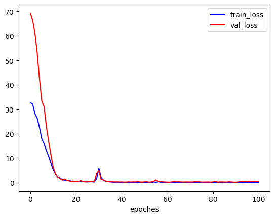

HybirdSN HSI classification
本文最后更新于：2023年5月8日 晚上
一、模型结构
原始数据->PCA降维->三层3DCNN->view数据到2D卷积能用的格式->一层2DCNN->fc+Dropout->outputs

具体网络参数如下：

二、代码
2.1 流程
- 定义模型
- 数据预处理
- 构建Dataset and DataLoader
- 定义损失函数和优化器
- 定义训练和测试函数
- 结果处理
2.2 定义模型
在init中定义了conv3d、conv2d和fc块，然后在forward中定义网络前向传播的顺序。
==两点注意==：三维卷积后的数据在进行二维卷积之前要进行数据变换、全连接层前的数据变换
1 | |
输出的网络结构如下：
1 | |
2.3 数据预处理
==疑问==：这里代码是将一个样本周围的像素提取来代替该样本，但是如果提取的一个patch内包含测试样本的话，是否造成了测试集的泄漏？
1 | |
2.4 构建Dataset and DataLoader
在pytorch中，图像数据的预处理一般是通过Dataset 和 DataLoader来完成的.
1 | |
输出如下：
1 | |
2.5 定义损失函数和优化器
1 | |
定义训练和测试函数
1 | |
2.6 结果处理
采取训练一轮验证一轮
1 | |
结果如下：
1 | |

这里我想计算aa,oa,kappa,采取训练完100轮再测试
需要改写一下val模型测试函数
1 | |
结果如下：
1 | |
HybirdSN HSI classification
http://example.com/2023/05/08/HybirdSN-HSI-classification/